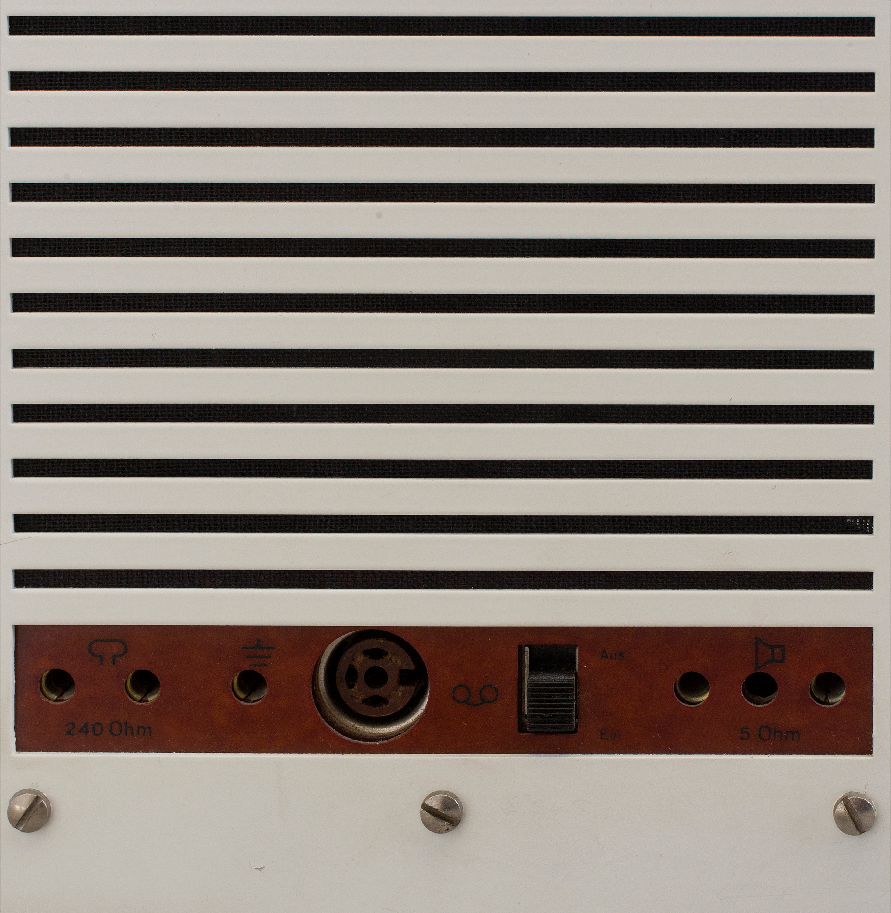

SK4 PHONOSUPER

(
1956
)
(
TURNTABLE
)
Designed together with Hans Gugelot in 1956 for Braun, is a record player with an integrated radio that revolutionized audio equipment design. Its metal and wood casing, along with an innovative transparent acrylic lid instead of the traditional fabric or wooden cover, earned it the nickname “Snow White’s Coffin.” This iconic design laid the foundation for minimalism in consumer electronics.
(
RADIO & TURNTABLE COMBINATION
)